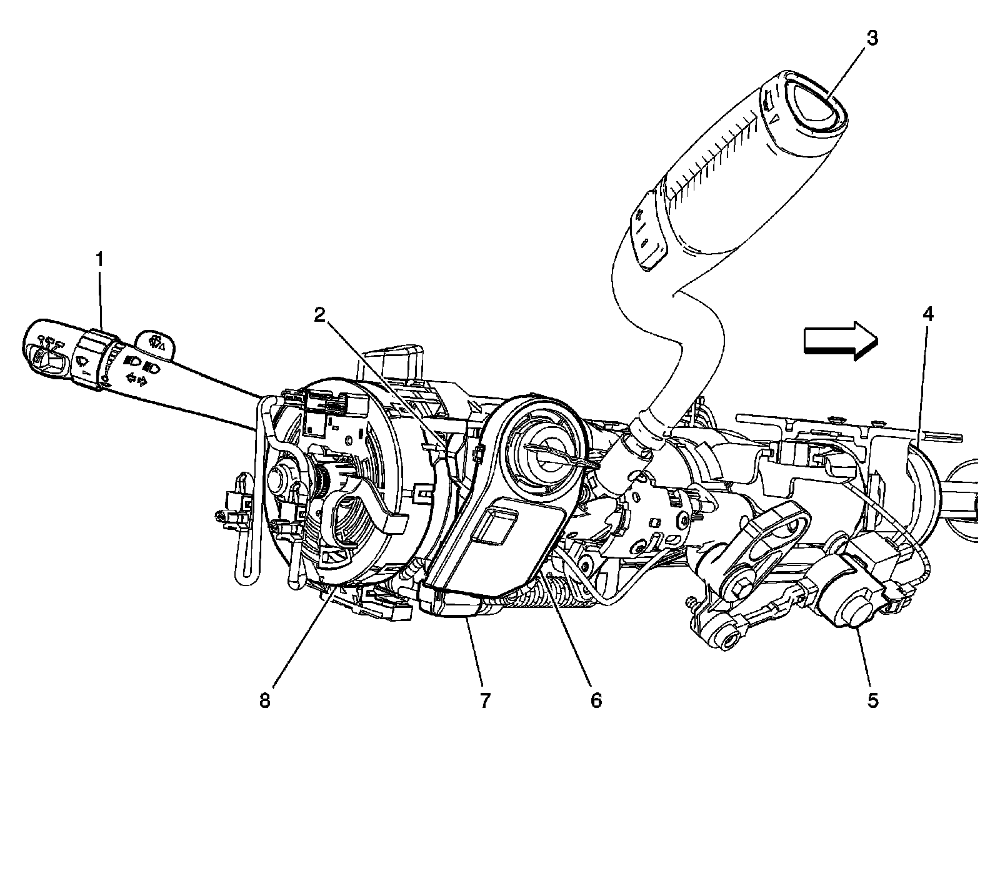
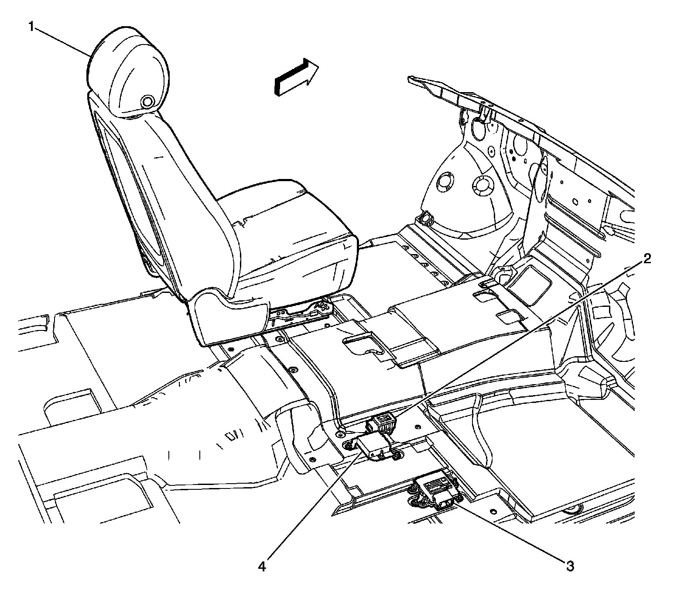
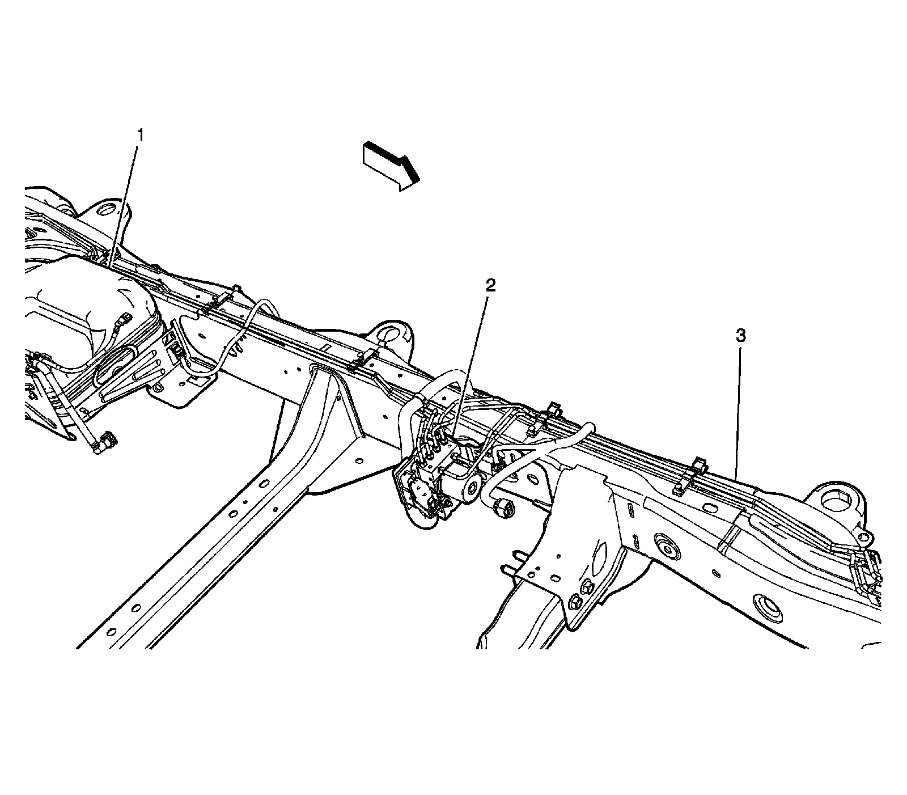

Antilock Brakes / Traction Control Systems: Locations
Antilock Brake System Component Views

1 - Windshield Wiper Motor
2 - Power Brake Booster
3 - Windshield Washer Solvent Heater
4 - Fuse Block - Underhood
5 - Engine Control Module (ECM)
6 - Transmission Control Module (TCM)
7 - Brake Booster Vacuum Sensor
8 - Brake Fluid Level Switch
Steering Column Components:

1 - Turn Signal Multifunction Switch
2 - Ignition Lock Cylinder
3 - Tow/Haul Switch
4 - Steering Angle Sensor
5 - Shift Interlock Soleniod
6 - Theft Deterrent Control Module
7 - Ignition Switch
8 - Inflatable Restraint Steering Wheel Module Coil
Under the Front Passenger Seat:

1 - Front Drivers Seat
2 - YAW Rate and Lateral Acceleration Sensor
3 - Object Alarm Module (UD7)
4 - Rear View Camera Image Display Module (UVC)
Left Side Frame and Underbody:

1 - Gas Tank
2 - Electronic Brake Control Module (EBCM)
3 - Chassis